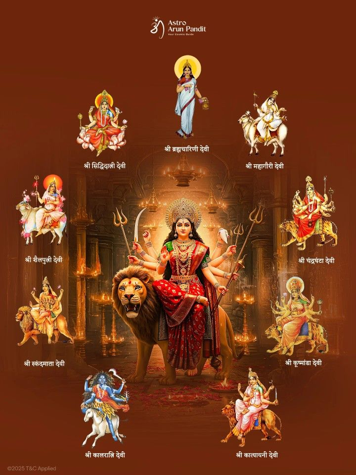

Major Hindu Festivals
🪔 Diwali – Festival of Lights
Diwali celebrates Lord Rama’s return to Ayodhya after 14 years of exile and his victory over Ravana.
People light diyas to symbolize the triumph of light over darkness and good over evil.
It also honors Goddess Lakshmi, the goddess of wealth and prosperity, with prayers and sweets.
🌈 Holi – Festival of Colors
Holi celebrates Prahlad’s devotion and Holika’s fall to symbolize faith’s victory over evil.
People throw colors, dance, and enjoy sweets, marking the start of spring and unity in diversity.

💃 Navratri – Nine Nights of Devotion
🎵 Janmashtami – Birth of Lord Krishna
Janmashtami marks the birth of Lord Krishna, the eighth incarnation of Lord Vishnu.
Devotees fast, sing bhajans, and recreate scenes from Krishna’s life, especially the Dahi Handi event.
🐘 Ganesh Chaturthi – Birth of Lord Ganesha
Ganesh Chaturthi celebrates the birth of Lord Ganesha, remover of obstacles.
Clay idols are worshipped for 10 days before immersion, representing life, humility, and new beginnings.